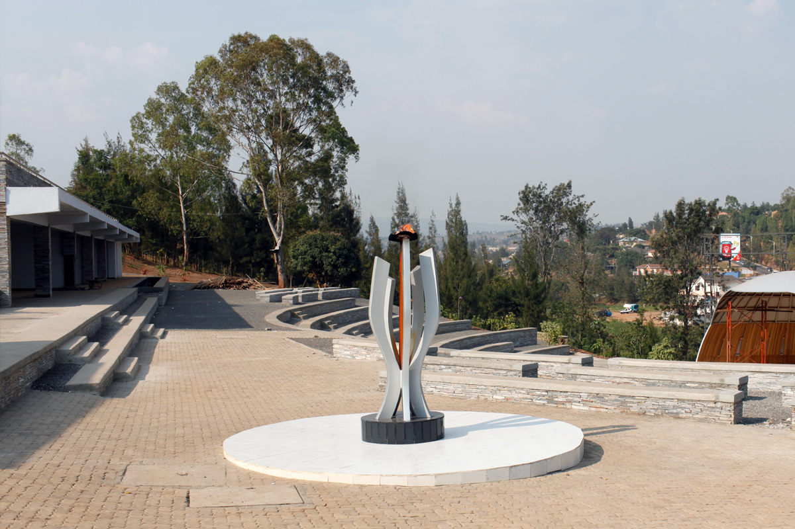

🕊️ About the Memorial
The Kigali Genocide Memorial is one of the most important historical sites in Rwanda. It was created to honor the victims of the 1994 Genocide against the Tutsi and to educate future generations.

The Kigali Genocide Memorial is one of the most important historical sites in Rwanda. It was created to honor the victims of the 1994 Genocide against the Tutsi and to educate future generations.
Visiting this memorial is not just about learning history—it is about understanding the importance of peace, unity, and humanity.
A solemn journey through the memorial grounds where 250,000 names are buried, and a nation's vow of Never Again